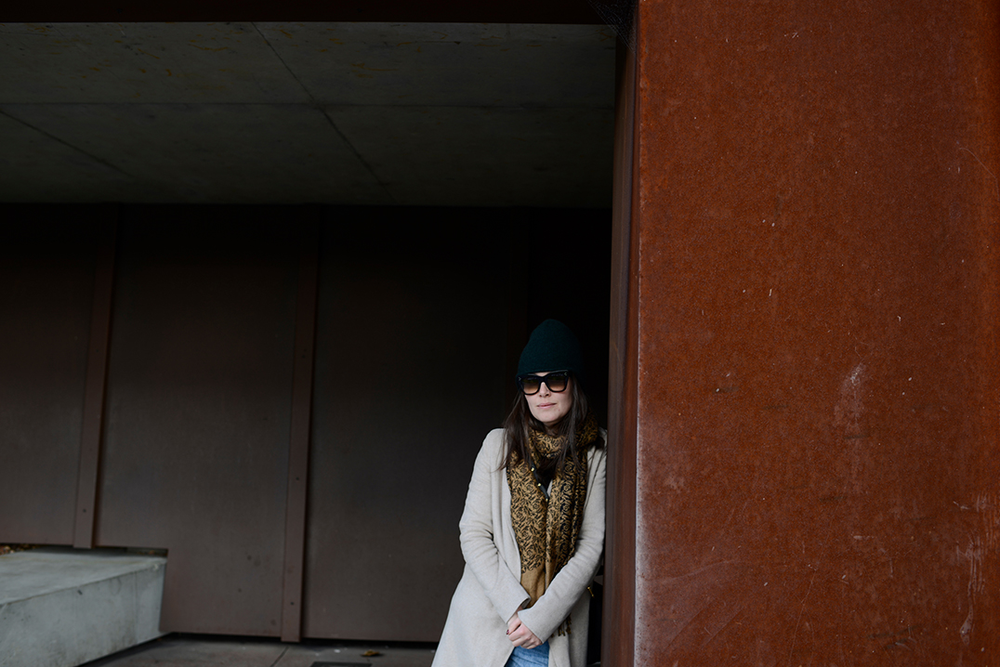

Features - The Boweress
A forever Moment
15 January, 2016
This was the highlight of DARK MOFO and it wasn’t even on the program. The Boweress is all about the power of space, space where you feel a presence, something James Turrell has so finely tuned throughout his artistic career. Turrell is one of those artists who has that innate power of taking you out of the artwork and beyond as you become fully immersed within his world of light. The projections play seamlessly against the natural light conveying a sense of calm and continuity. His works are so often not about light but rather are light, the physical and spiritual manifestation in sensory form. Turrell describes his medium as pure light stating “My work has no object, no image and no focus. With no object, no image and no focus, what are you looking at? You are looking at you looking.” Well, I definately fell down this rabbit hole and came out all the better for it.
Whilst enjoying the heated marble chairs watching the sun float ever so slowly behind the gum trees high up on a hill…the man himself strolled across the floor and took a seat right beside me, making this moment even more surreal. Breathe, stay calm, it’s only James Turrell, were some of the thoughts streaming through my mind. Being privy to him directing his assistant and what seemed like some fine tuning of the piece, my thoughts changed to my mother, my sister and the months that lay ahead and with the icy cool breeze upon me I felt a tear slide down my cheek. My sister once told me I felt things more than others, well I can say I was definately feeling feelings here ;). I wanted to grab him and talk him through all of the emotions I have felt whilst viewing his works over the globe. Luckily I refrained and instead googled what to say to an artist when you meet them…yep…crazy! I looked around at the audience and thought is it only me who knows what’s going on here, how lucky we are to be experiencing this genius first hand display his piece for us?
Upon leaving the installation I turned to him and simply thanked him, thanked him for the experience and that it was a real honour. I extended this with a way too long with what has become known as a trump handshake…to the point where he said…ok then…(laughs) For me that was a forever moment, one where being completely engaged with the limits and possibilities of human perception, one where my heart felt the excitement of falling in love and the turmoil of heartbreak all in one, one that only Turrell can promote. That physical feeling this space can evoke within is truly beautiful and indeed what confirms that we are not alone. (sorry to get all x files…the truth really is out there!)
With an extension currently underway to house 4 permanent Turrell pieces, MONA will be on a hitlist for many to view. (if it wasn’t already)
With plans for works from also Ryoji Ikeda and Matthew Barney to become part of the MONA permanent collection, David Walsh once again assumes his place in being the real deal.
